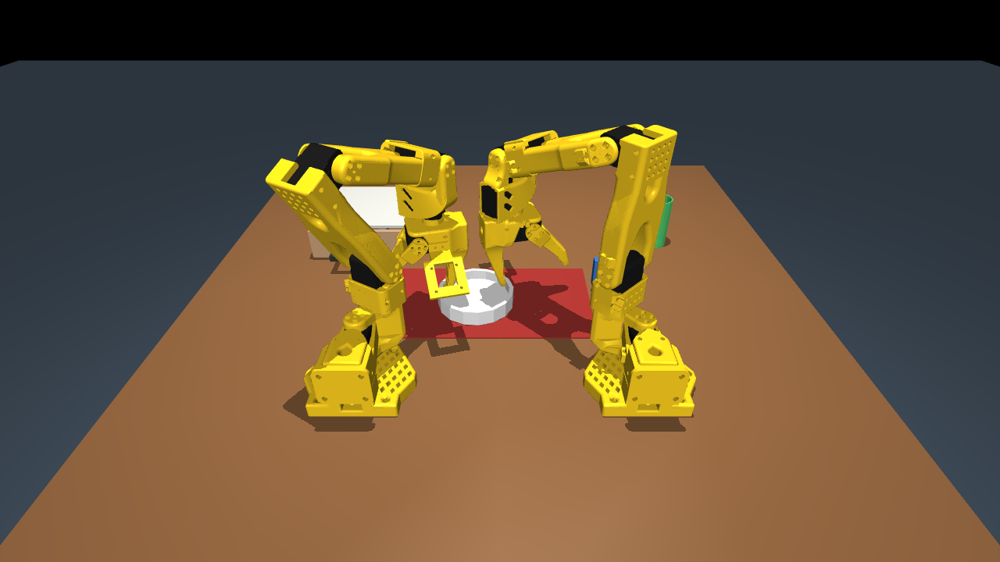

Applied AI engineering · Evaluation · London应用 AI 工程 · 评测 · 伦敦
LLM systems, tested before they're trusted
Python · TypeScript · LLM apps & agents · Evaluation · APIs & deployment
I build LLM applications and the checks that decide whether they actually work: statistical tests against the headline claim, held-out evaluation, deterministic gates beside the model, and deployments with health checks and CI. The projects below are public and you can run them; the work examples are from a live F2P game, anonymised. 我做 LLM 应用，也做判断它们是否真的有效的检验：针对核心卖点的统计检验、留出数据的评测、模型旁边的确定性闸门，以及带健康检查和 CI 的部署。下面的项目都公开、可以自己跑；工作中的例子来自一款已上线的 F2P 手游，已匿名。
Test the selling claim first先测最能卖的说法
second-pass tested its own headline idea on day one. It did not survive, and the write-up says so.
second-pass 第一天就测了项目最核心的卖点。结果没站住，文档里如实写明。
Publish the bad result结果不好也照实发布
table-for-two reports its learned policy at 0/10 on the full task, and explains why.
table-for-two 如实汇报学习策略在完整任务上 0/10，并解释了原因。
Never let the model be the only gate不让模型当唯一的关卡
In evidence-first-job-search an LLM reviewer scores against a rubric, and a deterministic fact check still has to pass.
evidence-first-job-search 里，LLM 评审按评分标准打分之后，还要过一道确定性的事实检查。
What AI engineering roles ask for, and where to see itAI 工程岗位要求的能力，以及对应的证据
| Requirement要求 | Evidence证据 |
|---|---|
| Building LLM apps and agents构建 LLM 应用和 agent | second-pass: a Gemini agent (Google ADK) whose every answer comes from a real ClickHouse query run through an MCP server · ArtDex: Claude vision on AWS Bedrocksecond-pass：基于 Google ADK 的 Gemini agent，每个回答都来自经 MCP 服务器执行的真实 ClickHouse 查询 · ArtDex：AWS Bedrock 上的 Claude 视觉识别 |
| Evaluating model output评测模型输出 | second-pass: Bonferroni-corrected tests across three films, plus a re-scoring control · table-for-two: 30 never-seen seeds and a Wilson interval on every success rate · evidence-first-job-search: rubric-based LLM reviewer with a hard veto, run in a separate sessionsecond-pass：三部片的 Bonferroni 校正检验，加一组重新打分的对照 · table-for-two：30 个从没见过的种子，每个成功率都带 Wilson 区间 · evidence-first-job-search：按评分标准打分、带一票否决项的 LLM 评审，在单独的会话里运行 |
| APIs and deploymentAPI 与部署 | second-pass: FastAPI with health and readiness probes, request IDs and streaming; Docker image built in CI; deployed on Cloud Run with secrets from Secret Manager · ArtDex: deployed on real AWS (Bedrock, DynamoDB, S3)second-pass：FastAPI，带健康检查和就绪探针、请求 ID、流式响应；CI 里构建 Docker 镜像；部署在 Cloud Run，密钥来自 Secret Manager · ArtDex：部署在真实的 AWS 上（Bedrock、DynamoDB、S3） |
| Engineering basics: tests, Git, CI工程基本功：测试、Git、CI | evidence-first-job-search: 190 tests, 97% coverage, CI on Ubuntu and Windows · gridbot: pytest and ruff across Python 3.9–3.12 · Roll Call: 128 testsevidence-first-job-search：190 个测试、覆盖率 97%，CI 跑在 Ubuntu 和 Windows 上 · gridbot：pytest 和 ruff，覆盖 Python 3.9–3.12 · Roll Call：128 个测试 |
| Shipped to real people真正交给人用过 | At work: my playtest engine on a live build; AI coding-assistant setup used by about six designers · Roll Call: award winner, live · ArtDex: live app工作中：自建走查引擎跑线上版本；我配置的 AI 编码助手约 6 名策划在用 · Roll Call：获奖作品，在线可玩 · ArtDex：在线应用 |
| Explaining it to non-technical people讲给非技术的人听 | evidence-first-job-search: a three-step quickstart written for non-technical users, README in English and Chineseevidence-first-job-search：写给非技术用户的三步上手教程，中英双语 README |
Projects项目
second-pass A null result, made to stick

Every answer is grounded in a real ClickHouse query run through an MCP server. The project's own selling point was tested on day one and failed: across three films and 18 tests against Bonferroni-corrected thresholds, one result cleared the floor by a hair and did not replicate. The write-up also publishes my own errors: end credits had been scored as film, which produced the original 4.40× headline (1.28× on the film itself). Served by FastAPI in a Docker image on Cloud Run; CI runs the tests, builds the image and re-runs the analysis scripts.
每个回答都来自经 MCP 服务器执行的真实 ClickHouse 查询。项目自己的核心卖点第一天就被测了，结果没站住：三部片、18 项检验按 Bonferroni 校正门槛判，只有一项勉强过线且不能复现。文档也公开了我自己的错误：片尾字幕曾被当成正片打分，造成最初「后半段注意力 4.40 倍」的结论（正片本身是 1.28 倍）。服务用 FastAPI，打包成 Docker 镜像部署在 Cloud Run；CI 会跑测试、构建镜像，并重跑分析脚本。
table-for-two Learned robot policy

An evaluation designed to resist self-deception: 10 evaluation seeds plus 30 never-seen seeds, with a Wilson confidence interval on every success rate. The learned policy scored 0/10 on the full table task, reported with the reasons, against a scripted pipeline at 10/10. INT8 quantisation cut CPU inference from 16.5 ms to 4.9 ms. Submitted to the Intel Physical AI Online Challenge.
为防自欺而设计的评测：10 个评测种子加 30 个从没见过的种子，每个成功率都带 Wilson 置信区间。学习策略在完整任务上 0/10，照实汇报并解释原因，脚本流程为 10/10。INT8 量化把 CPU 推理从 16.5 ms 降到 4.9 ms。已提交到 Intel Physical AI 线上挑战赛。
ArtDex Vision product on AWS

A museum companion: photograph an artwork, Claude vision on Bedrock identifies it, and the visit is saved to a personal collection. GPS narrows the candidates and manual search is the fallback when recognition is unsure. Built on Next.js with DynamoDB and S3; photos stay private and the browser only gets short-lived presigned URLs.
博物馆伴游应用：拍下作品，Bedrock 上的 Claude 视觉模型识别出是哪一件，这次参观就存进个人收藏。GPS 先缩小候选范围，识别没把握时可以手动搜索。基于 Next.js、DynamoDB 和 S3；照片保持私有，浏览器只拿到短时有效的预签名链接。
evidence-first-job-search
A public job-search workflow for AI coding assistants. An LLM reviewer scores a CV against a five-dimension rubric with a truthfulness veto, in a separate session from the model that wrote it; a deterministic fact check then fails the build if any number, skill or metric is missing from the fact base. Command-line tools check the UK sponsor register. 190 tests at 97% coverage, CI on Ubuntu and Windows with Python 3.10 and 3.12.
给 AI 编码助手用的公开求职工作流。LLM 评审按五个维度的评分标准给简历打分，「真实性」一项可一票否决，而且在和写稿模型分开的会话里运行；之后还有一道确定性的事实检查，只要有数字、技能或指标不在事实库里就直接失败。另有查询英国担保名册的命令行工具。190 个测试、覆盖率 97%，CI 跑在 Ubuntu 和 Windows、Python 3.10 和 3.12 上。
gridbot Black-box test automation
Black-box UI testing for Android builds that UIAutomator and Appium can't reach. pytest and ruff run in GitHub Actions across Python 3.9–3.12, and the README states the framework's limits, including 50–500 ms OCR latency.
给 UIAutomator 和 Appium 读不到的 Android 版本做黑盒界面测试。GitHub Actions 跑 pytest 和 ruff，覆盖 Python 3.9–3.12；README 写明了框架的局限，包括 50–500 ms 的 OCR 延迟。
Roll Call Group-chat story game
Winner of "Best Product Integration with Z.ai" at VibeHack London 2026. A branching-story game for group chats, built with Next.js, TypeScript and Zod schemas, with 128 tests. Built with Claude Code on GLM; the game itself runs on pre-written branches and deterministic logic.
VibeHack London 2026「Best Product Integration with Z.ai」获奖作品。在群聊里玩的分支剧情游戏，用 Next.js、TypeScript 和 Zod 结构校验，128 个测试。开发时用的是 Claude Code（GLM 模型）；游戏本身跑的是预写的分支剧情和确定性逻辑。
At work工作中
From a live F2P mobile title; studio and game are anonymised and nothing here links to private code.
来自一款已上线的 F2P 手游；工作室和游戏名已匿名，这里不链接任何私有代码。
AI playtest on a live build在线上版本上做 AI 走查
A general-purpose playtest engine of my own, with all game-specific knowledge in swappable profiles; it has run across six titles and versions, including an externally published game. On a live build the first run produced 13 severity-ranked findings with repro evidence. When a recording subsystem silently wrote empty files, I marked the cause unconfirmed and downgraded the two findings that depended on playback.
自建的通用走查引擎，和具体游戏相关的知识都放在可替换的配置里，已在六个游戏和版本上跑过，其中一个是外部已上线的游戏。在线上版本上第一次运行就产出 13 条按严重程度分级、带复现证据的问题。录像子系统悄悄写出空文件时，我把原因标为「未确认」，并把依赖录像的两条结论主动降级。
AI coding assistants for a design team给策划团队配置 AI 编码助手
Wrote shared rule files, shared skills and commands, and workflows for AI coding assistants, and helped colleagues get started. Used mainly by the six or so designers in a team of 50+.
为 AI 编码助手写共享规则文件、共享 skill 和命令、搭工作流，并带同事上手。主要由 50 多人团队里的约 6 名策划使用。
Skills技能
Python · TypeScript · FastAPI · Pydantic and Zod structured outputs · Claude API, Gemini API (Google ADK) · MCP integration · LLM-as-judge with rubrics · statistical testing (Bonferroni, Wilson intervals) · pytest, Vitest, GitHub Actions · Docker · GCP Cloud Run · AWS Bedrock, DynamoDB, S3 · OpenVINO quantisation · Claude Code and Cursor
Python · TypeScript · FastAPI · Pydantic 与 Zod 结构化输出 · Claude API、Gemini API（Google ADK）· MCP 集成 · 基于评分标准的 LLM 评审 · 统计检验（Bonferroni、Wilson 区间）· pytest、Vitest、GitHub Actions · Docker · GCP Cloud Run · AWS Bedrock、DynamoDB、S3 · OpenVINO 量化 · Claude Code 与 Cursor
Contact联系
Open to applied AI engineer and AI evaluation roles in London. Email suzysu418@gmail.com for my CV.
正在寻找伦敦的应用 AI 工程、AI 评测岗位。简历请邮件索取：suzysu418@gmail.com。